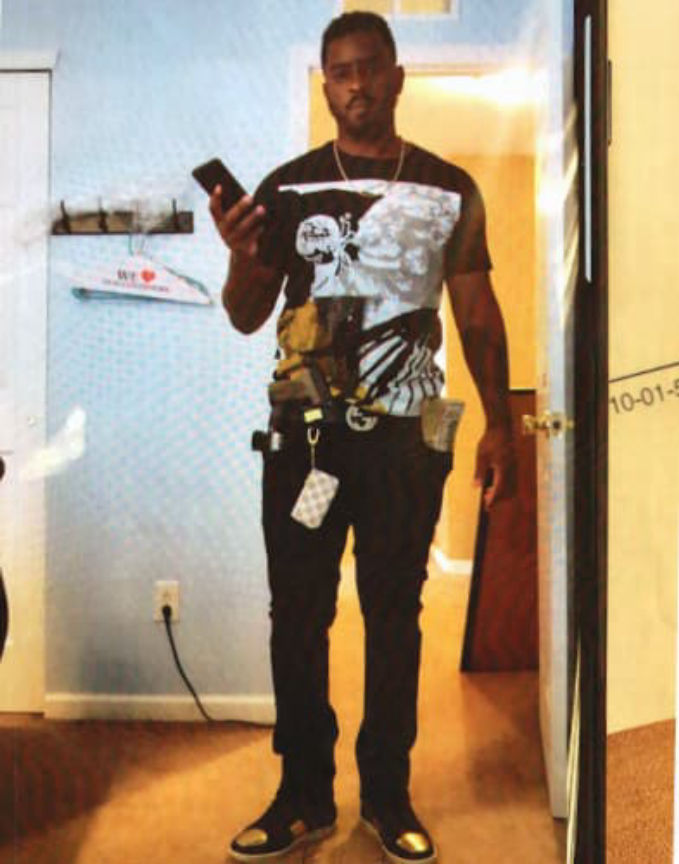
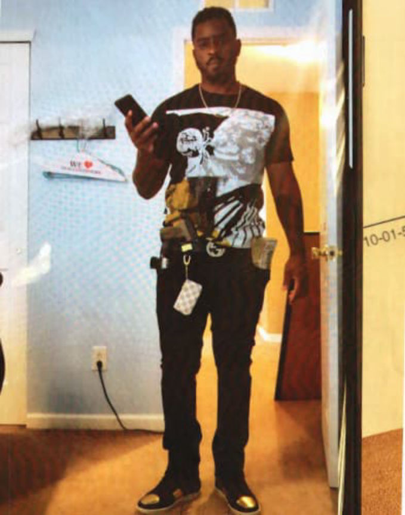

PA Man Sentenced for Reselling Counterfeit Xanax Pills
A Philadelphia man was sentenced to 20 years in federal prison for purchasing hundreds of thousands of counterfeit Xanax pills on the darkweb, reselling the pills for profit, and laundering the proceeds.
According to an announcement by the U.S. Attorney’s Office Eastern District of Pennsylvania, Michael Gordon, 32, of Philadelphia, PA, ran a ‘sophisticated’ drug trafficking operation that involved purchasing bulk-quantities of counterfeit Xanax pills from a darkweb vendor in the UK and reselling the pills to co-conspirators throughout Pennsylvania.
Investigators from a Homeland Security Investigations’ opened an investigation into Gordon after Customs in the UK had seized 50,000 counterfeit Xanax pills destined for Gordon’s address.
In June of 2018, HSI Philadelphia received information from HSI London that Customs officials in the United Kingdom had intercepted several shipments of suspected counterfeit Xanax (a brand name for alprazolam) pills destined for the United States. Three of these parcels, containing approximately 50,000 pills, were found to be destined for two addresses in Philadelphia, PA as listed below, with one parcel addressed to 4804 E. Alcott Street, and two parcels addressed to 4600 Hartel Ave, Philadelphia, PA 19136.
After receiving the pills Gordon resold them and laundered the proceeds to hide the drug trafficking operation. Investigators identified Coinbase accounts associated with Gordon as well as with his co-conspirators.
Coinbase account 5a32d79731fd64027f085f8a has been identified as belonging to GORDON. The account was opened on December 14, 2017. GORDON used an address of 1405 Tudor St, Philadelphia, PA 19111 when the account was opened. GORDON has bought 17.19751482 Bitcoin since the account’s inception (equivalent to $126,609.) GORDON has received three transfers totaling 3.86077627 Bitcoin into this account, all from [co-conspirator]. GORDON has sent a total of 19.72634589 Bitcoin to others from this account over 24 transactions. Many of these transactions were small amounts until April 2018, when several large transfers were made from GORDON’s account to unknown Virtual Wallets.
Special Agents with the Drug Enforcement Administration conducted physical surveillance at Gordon’s residence and matched pill shipments to Gordon’s schedules. They also pulled packing material from Gordon’s trash and sent samples to Pfizer, the pharmaceutical company that produces Xanax.

The task force ended the drug trafficking operation by arresting Gordon on November 9, 2018.
U.S Attorney McSwain:
Simply put, Gordon placed the well-being of others at risk in order to satisfy his own greed. Xanax can be highly addictive under normal circumstances, but the counterfeit version of Xanax can be even more addictive and potentially deadly. Gordon did not think twice about this danger, as he was focused solely on how to profit from the misery of others. He is now in prison, where he belongs.
In June 2019, Gordon pleaded guilty to conspiracy to traffic in counterfeit goods and conspiracy to commit money laundering. On March 10, 2020, United States District Court Judge Paul S. Diamond sentenced Gordon to 20 years in federal prison and three years of supervised release. The judge also ordered him to pay over $2.7 million in restitution and to forfeit over $300,000.
According to an announcement by the U.S. Attorney’s Office Eastern District of Pennsylvania, Michael Gordon, 32, of Philadelphia, PA, ran a ‘sophisticated’ drug trafficking operation that involved purchasing bulk-quantities of counterfeit Xanax pills from a darkweb vendor in the UK and reselling the pills to co-conspirators throughout Pennsylvania.
Investigators from a Homeland Security Investigations’ opened an investigation into Gordon after Customs in the UK had seized 50,000 counterfeit Xanax pills destined for Gordon’s address.
In June of 2018, HSI Philadelphia received information from HSI London that Customs officials in the United Kingdom had intercepted several shipments of suspected counterfeit Xanax (a brand name for alprazolam) pills destined for the United States. Three of these parcels, containing approximately 50,000 pills, were found to be destined for two addresses in Philadelphia, PA as listed below, with one parcel addressed to 4804 E. Alcott Street, and two parcels addressed to 4600 Hartel Ave, Philadelphia, PA 19136.
After receiving the pills Gordon resold them and laundered the proceeds to hide the drug trafficking operation. Investigators identified Coinbase accounts associated with Gordon as well as with his co-conspirators.
Coinbase account 5a32d79731fd64027f085f8a has been identified as belonging to GORDON. The account was opened on December 14, 2017. GORDON used an address of 1405 Tudor St, Philadelphia, PA 19111 when the account was opened. GORDON has bought 17.19751482 Bitcoin since the account’s inception (equivalent to $126,609.) GORDON has received three transfers totaling 3.86077627 Bitcoin into this account, all from [co-conspirator]. GORDON has sent a total of 19.72634589 Bitcoin to others from this account over 24 transactions. Many of these transactions were small amounts until April 2018, when several large transfers were made from GORDON’s account to unknown Virtual Wallets.
Special Agents with the Drug Enforcement Administration conducted physical surveillance at Gordon’s residence and matched pill shipments to Gordon’s schedules. They also pulled packing material from Gordon’s trash and sent samples to Pfizer, the pharmaceutical company that produces Xanax.

Investigators pulled pictures and texts off a co-conspirators phone
The task force ended the drug trafficking operation by arresting Gordon on November 9, 2018.
U.S Attorney McSwain:
Simply put, Gordon placed the well-being of others at risk in order to satisfy his own greed. Xanax can be highly addictive under normal circumstances, but the counterfeit version of Xanax can be even more addictive and potentially deadly. Gordon did not think twice about this danger, as he was focused solely on how to profit from the misery of others. He is now in prison, where he belongs.
In June 2019, Gordon pleaded guilty to conspiracy to traffic in counterfeit goods and conspiracy to commit money laundering. On March 10, 2020, United States District Court Judge Paul S. Diamond sentenced Gordon to 20 years in federal prison and three years of supervised release. The judge also ordered him to pay over $2.7 million in restitution and to forfeit over $300,000.